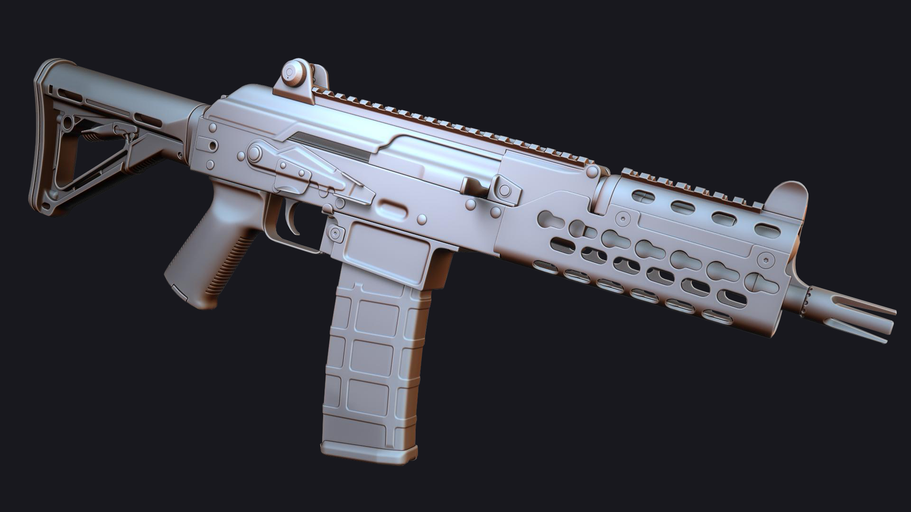
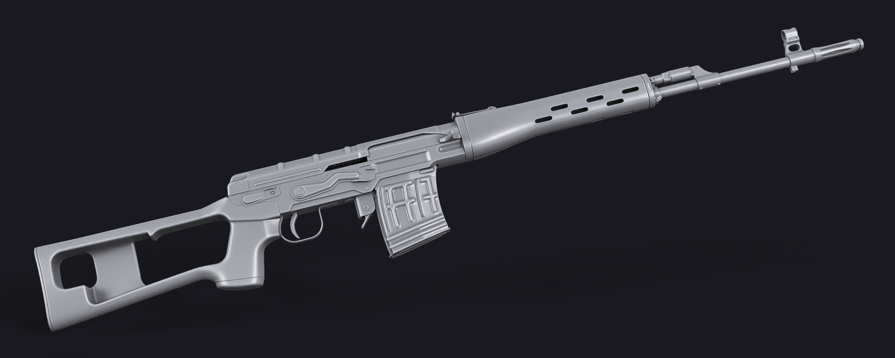
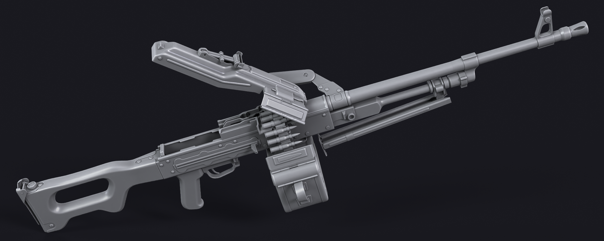

Gunslinger Mod
Gunslinger is a commmunity modification project for the game S.T.A.L.K.E.R. Call of Pripyat. I made a few of the weapons models for the project. Modeling was done in 3ds Max and baking was done in Marmoset. Texturing was done by various artists, and the animations + engine integration was done by Strifer, the project lead.
High Poly Renders


